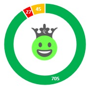

P%%
Notre Net Promoter Score est de
ValeurNPS

Commentaire
zone de texte
P%%
Taux de satisfaction
Les clients répondants du dateD au dateF :

■ Nos promoteurs ■ Nos passifs ■ Nos détracteurs
Notre Net Promoter Score est de
ValeurNPS
Commentaire
zone de texte
| Date de l'étude | Total global de client répondants | Total de clients contents | Total de clients indécis | Total de clients mécontents | Vos promoteurs | Vos rétracteurs | Vos passifs | Taux de satisfaction | NPS |
| Du dateD au dateF mai | total | content | indecis | mecontent | promo | detract | passif | P% | NPS |
| Indice de satisfaction Excellent |
C% | I% | M% | Excellent Votre objectif est de maintenir le rythme Bravo à toute l'équipe |
|||||